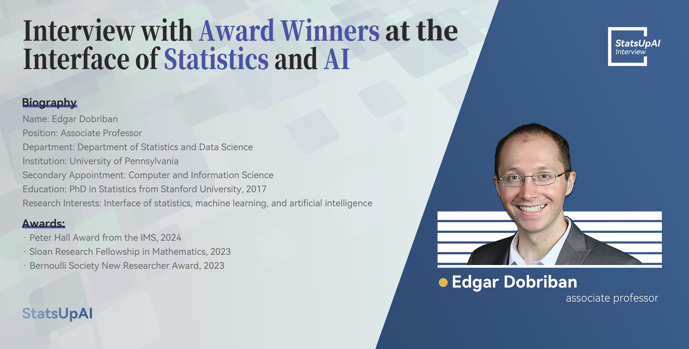

Interview with Award Winners at the Interface of Statistics and AI

1. Can you summarize your award-winning research and its significance for statistics and AI?
Thank you for the opportunity to discuss my work! Much of my research seeks to connect statistics to AI and machine learning (ML). I am interested to solve AI/ML problems using statistical tools, to clarify phenomena from AI/ML using a statistical perspective, as well as to use AI/ML tools to improve statistical methods. As such, I am hoping to make advances in both AI/ML and in statistics, and furthermore enhance the public image of statistics by showing its importance to AI.
Here are a few examples from my work with mentees and collaborators. An important emerging recent area in AI/ML concerns fairness: we want to make sure to treat various protected groups (e.g., defined based on race) “fairly”. For instance, we may want to have the same true positive rates for all protected groups, etc. This can be hard, because there is no “universal” notion of fairness. Despite this, a rich emerging body of work in fair machine learning has made a great deal of progress in defining and achieving various fairness criteria. In recent work, we have studied the problem of fair classification from a statistical perspective. We figured out how to learn optimal fair classifiers (minimizing classification error) subject to various fairness constraints, by making an unexpected connection to the Neyman-Pearson lemma. To me this is an exciting example showing how classical statistical tools can be used to solve problems in modern AI/ML.
Another important emerging area in recent years is generative AI, and specifically large language models (LLMs), exemplified by ChatGPT, Claude, Gemini, etc. While these methods can have impressive performance on a variety of tasks (for instance on code generation), they are also prone to hallucinations. Therefore it would be helpful if they could quantify their own uncertainty and inform users when they are not sure. This has been attempted in several recent research papers, by introducing various uncertainty measures. One would expect that these measures are on average larger when the LLM’s performance is worse, a property called “rank-calibration”. In recent work, we have shown that unfortunately this is often not the case. To address this problem, have developed methods to post-process pre-trained LLMs to achieve rank-calibration. I want to highlight that for this work, we have crucially built on intuition from the classical statistical notion of calibration, which has been investigated in statistics, meteorology, forecasting, etc since at least the 1950s, including by Sir David Cox (testing calibration was his first application of logistic regression!).
2. What statistical methods from your research are most applicable to AI?
Some of the statistical methods that I develop are directly targeted towards AI/ML. This includes the rank-calibration methodology I mentioned above. Some other methods are general statistical tools applicable quite broadly, including, but not only, to when AI/ML is used.
For instance, I have worked on developing methods for constructing prediction sets for regression and classification problems. The idea here is that instead of constructing a point prediction, we construct a set of predictions. In the form of tolerance regions, such ideas date back to Sam Wilks’s celebrated work in the early 1940s. Given the quality levels of items from a production line, he was interested to predict a range of values where the quality of the next item would lie with 95% probability. In modern times, there has been renewed interest in this area under the name of conformal prediction or distribution free predictive inference, where the goal is for instance modify the outputs of our AI/ML model, so that the true class is guaranteed to be among the predicted classes with 95% probability. I have contributed to a variety of questions in this area, including developing methods that are robust to distribution shift, and methods that are more generally applicable than under standard i.i.d. or exchangeability assumptions. An exciting feature of this research is that the statistical methods developed can be used along with state-of-the-art AI/deep learning tools, endowing those tools with rigorous statistical guarantees.
3. How does your work address challenges at the intersection of statistics and AI?
From a very high level, both statistics and AI aim to fit models to data to extract information. However, AI/ML research usually does not make any explicit assumptions about the data, while in statistics we are accustomed to working with probabilistic assumptions. To give an example, neural nets have been derived not based on a probabilistic model, but rather heuristically, based on analogies with the brain. There are sometimes implicit assumptions, for instance that the data points are exchangeable or i.i.d., but they are rarely made explicit in terms of enforcing a specific probabilistic model. I think that one of the biggest challenges for statistics is to operate in this regime , where only few explicit assumptions are allowed.
My recent research is done with this in mind. Some of the work that I mentioned above about calibration and uncertainty quantification only assumes that the data is i.i.d., and so is compatible with standard deep learning/AI. In addition, some of my recent work does away entirely with statistical models, and is “pure” AI.
For instance, in a recent work we have developed methods to jailbreak language models. Jailbreaking is part of the increasing safety concerns about LLMs, and refers to the process of getting an LLM to display undesired behavior, give unethical or unsafe answers, etc. While safety alignment such as reinforcement learning from human feedback (RLHF) aims to remove such undesired behaviors, we have shown in recent research that jailbreaking is often possible through automated querying via another language model. Since evaluating jailbreaks has often been done in an ad hoc way, we have also developed the standardized JailbreakBench benchmark as a publicly available tool for the field. While these works do not have a clear statistical component, I found it valuable to work on them due to their importance.
4. What impact do you foresee your research having on the future of AI systems?
AI is evolving at a fast pace, and so it is hard to predict the direction of the field, much less the kind of impact that my own work will have. However I do hope that---in the long-term---my work will contribute to making AI safer and more reliable.
5. What emerging trends in statistics do you believe are crucial for advancing AI?
I think that for the field of statistics, it is important that at least a fraction of researchers become fully engaged in AI. Given the growing level of interest and funding from many stakeholders, we want to make sure that we have a seat at the table when AI is discussed. We want to make sure that it is clear that statistics is an integral part of AI, and that statisticians have been making important contributions to what is now called AI for a hundred years. For instance the notions of maximum likelihood, calibration, distributional robustness, bandits, etc., are all key topics of research in modern AI, and have been introduced or pioneered by statisticians or in statistics journals over many decades. To enhance the public image of our field, I think it is very important that this is widely known.
To summarize, I believe that an important trend in statistics that we need to see is that statisticians engage with AI, keep making contributions in any area where they see an opportunity, and highlight other statisticians’ contributions to AI from the past and the present.
Proofread by: Hongtu Zhu